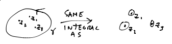

What’s the Laurent series for
at \(z=α\), \(r=0\), \(R=\infty\)?
It’s
\(a_{-1}=1\), all other \(a_n=0\).
A point \(z_0\in\mathbb C\) where \(f\) is undefined at \(z_0\) but is holomorphic on some deleted disk around \(z_0\) (\(D^*_r(z_0)=\{z\in\mathbb C | 0<|z-z_0|<r\}\)) is called an isolated singularity.
If \(z_0\) is an isolated singularity, it has a Laurent series
on \(D^*_r(z_0)\).
We say that \(z_0\) is
A removable singularity of \(f\) if \(a_m=0\) \(\forall m<0\)
Example
Note
no negative powers
\(f(z)\) is undefined at 0, but the power series is entire. So we can extend \(f(z)\) to a function holomorphic at zero by letting \(f(0)=1\).
Thus the singularity is removed.
We say \(z_0\) is a pole of order \(k\) if \(a_{-k}\neq 0\) and \(a_m=0\) \(\forall m<-k\).
So
Equivalently (proof below), if \(k\in\mathbb N\) is the smallest natural number such that \(z_0\) is a removable singularity for \((z-z_0)^kf(z)\), i.e. \((z-z_0)^kf(z)\) extends to a holomorphic function at and around \(z_0\), then the pole has order \(k\).
\(f\) has an essential singularity at \(z_0\) if \(a_m\neq 0\) for infinitely many negative \(m\). Thus, not a pole, not removable.
Lemma 1
\(F\) has a pole of order \(k\) at \(z_0\) iff
where \(g(z)\) is holomorphic “at” \(z_0\) and \(g(z_0\neq 0\).
Proof:
\(a_{-k}\neq 0\), Then:
and is holomorphic “at” \(z_0\).
conversely, if
then
So
has a pole of order \(k\) at \(z_0\).
Lemma 2
If \(f\) has a pole of order \(k\) at \(z_0\), then for all \(m<k\),
Proof:
by previous Lemma,
where \(g(z_0)\neq 0\), \(g(z)\) is holomorphic in a nbd around \(z_0\).
Theorem
If \(z_0\) is an essential singularity of \(f\) and \(D_r^*(z_0)\) is a punctured disk at \(z_0\), then for all \(w\in\mathbb C\) (except maybe one \(w_0\in \mathbb C\)),
there exists \(z\in D_r^*(z_0)\) such that \(f(z)=w\)
Proof: Beyond scope of this class
Example
for all \(ε>0\), for all \(q\in\mathbb C\), \(w\neq 0\), there exists \(z\in D_ε^*(0)\) such that
If \(f\) is holomorphic at and around \(z_0\), we say \(f\) has a zero of order \(k>0\) if the following equivalent things hold:
\(f(z)=a_k(z-z_0)^k+a_{k+1}(z-z_0)^{k+1}+...\), \(a_k\neq 0\) and \(a_m=0\) for all \(m<k\)
\(f(z_0)=a_0=0\), \(f'(z_0)=a_1=0\), ..., \(f^{(k-1)}(z-z_0)=(k-1)!a_{k-1}=0\)
We can write
where \(g\) is holomorphic at \(z_0\) and \(g(z_0)\neq 0\).
Proof: See Lemma 1
We can say \(z_0\) is “an order zero zero” if \(f(z_0)\neq 0\).
Why? So we can generalize the concept of “zeros” to include poles.
Definition
We say \(z_0\) is a “zero” of order \(k\in\mathbb Z\) if
where \(g\) is holomorphic at \(z_0\) and \(g(z_0)\neq 0\).
Definition (Residue)
If \(f\) has an isolated singularity at \(z_0\), its residue is the \(a_{-1}\) coefficient. We write:
Lemma 3
If \(z_0\) is an isolated singularity of \(f\) which is holomorphic on \(D_ε^*(z_0)\), then for \(γ\) a counterclockwise circle around \(z_0\) in \(D_ε^*(z_0)\), then
Proof:
Definition
\(f\) is meromorphic on \(D\) if for all \(z_0\in D\), \(f\) is analytic on an open neighbourhood of \(z_0\) or \(f\) has a pole at \(z_0\).
Theorem (Cauchy’s Residue Theorem)
if \(f\) is meromorphic on \(D\) and \(γ\) is a simple closed counterclockwise curve in \(D\) with interior in \(D\) and finitely many poles \(\{z_1,...,z_n\}\) in the interior of \(γ\), then
Proof:
By Cauchy’s Theorem:
Use Lemma 3.
Residue Lemma
Assume all functions are holomorphic around \(z_0\)
\(f(z)=\frac{g(z)}{h(z)}\) where \(g\) and \(h\) have zero of same order at \(z_0\), then \(Res(f,z_0)=0\)
If \(\lim_{z\to z_0}(z-z_0)f(z)\) exists, \(f(z)\) has at most a simple pole at \(z_0\) and
\(f(z)=\frac{g(z)}{h(z)}\), \(g(z_0)\neq 0\), \(h(z_0)=0\), and \(h'(z_0)\neq 0\), then \(Res(f,z_0)=\frac{g(z_0)}{h'(z_0)}\)
\(f(z)=\frac{g(z)}{(z-z_0)^2}\), \(g(z_0)\neq 0\) then \(Res(f,z_0)=g'(z_0)\).
\(f(z)=\frac{g(z)}{h(z)}\) where \(g\) has a zero of order \(l\) at \(z_0\) and \(h\) has a zero of order \(k+l>0\) at \(z_0\)
Then \(f\) has a pole of order \(k\) at \(z_0\) and
where \(φ(z)=(z-z_0)^kf(z)\)
Proof: Follows from Laurent Expansion (see next lecture)